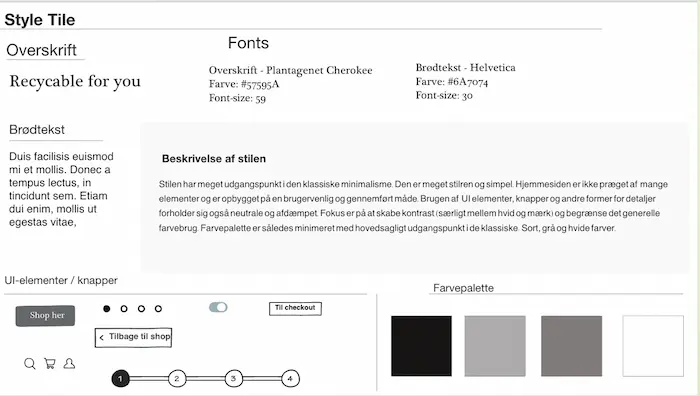

UX

UX temaet bestod i at designe en webshop der sælger t-shirts. Opgavens mål lave en prototype i Adobe XD og pitche ideen. Temaet indeholdte meget læring om analyse-og skitseringsarbejde.
Opgavens hovedpunkter
- Forstå opgaven udfra givet breif af case
- Udtænke koncpet (USP, afsender, målgruppe osv.)
- Foretage forskellige former for research
- Gå fra UX Research til ide (Sketch)
- Teste prototype
- Pitche konceptet
Proces
Navnet på min webshop var Crafted Cloth (CC). CC blev tiltænkt som en bæredygtig e-shop. Konceptet byggede på at lave tilpasset tøj udfra kropsmål samt at kunne genbruge brugt indsendt tøj. Målgruppen var tiltænkt mænd i 18-30 års alderen.
På dette tema lærte vi om den metodiske udvikling fra research til ide. Til denne proces arbejde vi meget med lightning demos og sketch. Denne form for idegenering blev også benyttet på sidste tema som en del af redesign opgaven. Jeg benyttede 4 typer af Research (desk, observation, interview samt survey research, til at skabe grundlag for den viden og de indsigter der basserede sig på mit koncpet. En kombination af disse kvalitative og kvantitavie researchformer ledte til videreudvikling af konceptet. De primære indsigter jeg fik var:
- Pris og kvalitet er de vigtigste faktorer når der handles online
- Uoverskuelig side og begrænset udvalg er primære årsager til fravælgelse af en side
- Bæredygighed er ikke det primære fokus når der handles på nettet
Efterfølgende kunne jeg begynde at skisere løsningen til webshoppen. Jeg tog udgangspukt i et pointssytem, så brugeren havde mulighed for at optjene points ved at indsende tøj. Tanken var at dette ville fremme incitamentet og den generelle brugeroplevelse. I designprocessen blev dette system inkluderet i en udvidet personlig side. Dette indebar at brugeren havde fuld kontrol over og tilgang til alle de nødvendige informationer.
Processens overordnet fremgangsmåde

De indledende test viste at prototypens viseuelle udtryk krævede en justering. Testene viste også at flere brugere var usikre på de to hovedkoncepter (returnering og størrelstilpasning).
Prototype 1

Styletile for prototype 2
Indledende ide til tilpasning-koncept
Pitch
Pitchens opbygning fulgte undervisningsmaterialet om pitch struktur, hvor pitchen blev delt op i tre overordnede dele. Der kunne være taget mere inspiration fra NABC-modellen i forhold til markedanalyse og beabejdelse af researchen. Præsentationen blev indledt ved at introducere mængden af tons tøj der bliver smidt ud hvert år i forlængelse af hvor meget tøjforbruget er steget de sidste 10 år. På denne måde blev konceptet placeret som løsning til en relevant problematik, samtidig med at det fangede opmærksomheden. Jeg fik præsenteret relevant research samt relevante indsigter. Pitchen inddrog til sidst resultaterne fra testene og kunne konkludere at målgruppen skulle udvides grundet at bæredygtigehed ikke var relevant nok for det specifikke segment. Det blev også konkluderet, at udvalget skulle udvides hvis det skulle holde brugeres interesse. Feedback viste at pitchen kunne være opstillet mere struktureret.
Bemærkninger
Prototype og pith havde været mere optimeret, hvis jeg havde lagt fokus på en af konceptets hovedfunktioner, enten den skræddersyet del eller den genbrugelige del. Der blev meget at forholde sig til og teste på. Testene viste at disse enkelte koncept dele ikke fremstod tydelige nok. Ved at gå i dybden med en af koncepterne kunne arbejdet være blevet optimeret mere.
Udforsk prototype 2 her